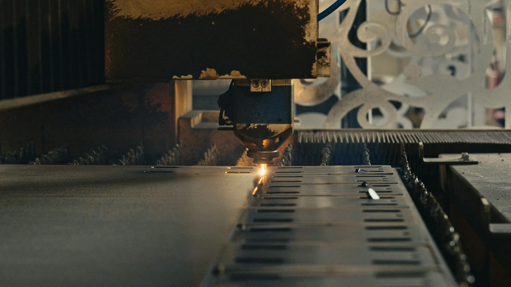

Концептуальная иллюстрация01 / ЛАЗЕР
Лазерная резка
Резка материалов по заданному контуру. Для оценки отправьте чертёж, макет или описание изделия — уточним параметры заказа.
↗От идеи до решения.
Резка пластика, акрила, фанеры, картона, металла и других материалов. Работаем по чертежу, макету или эскизу — поможем уточнить задачу и подобрать способ обработки.
Для материалов и изделий подходят разные способы обработки. Расскажите о задаче — поможем определить направление и уточнить условия изготовления.
Фото плоттера: factorf2 / Wikimedia Commons, CC BY-SA 2.0. Изменения: WebP, уменьшение и кадрирование. Фотографии иллюстративные, не оборудование i-cut.pro.
Подбираем способ обработки с учётом материала, формы детали и требований к результату. Перечень ниже помогает сориентироваться перед обращением.
Список основан на матрице направлений заказчика. Доступность конкретного материала и способа его обработки, безопасность процесса, размеры и допустимые толщины определяются при рассмотрении запроса. Не все материалы подходят для каждой технологии.
Не обязательно заранее разбираться в технологиях резки. Начните с того, что у вас уже есть: файла, фотографии или нескольких слов об изделии.
Пришлите файл, размеры, материал и количество деталей, если они известны. Уточним исходные данные, необходимые для расчёта.
Передать задание ↗Опишите, что хотите получить. Поможем уточнить параметры и сформулировать задачу для оценки производством.
Рассказать об идее ↗От первого обращения до согласования условий. На каждом этапе уточняем детали, чтобы оценить возможность выполнения заказа.
Присылаете описание, чертёж, макет, эскиз или фотографию.
Обсуждаем материал, размеры, количество и пожелания к результату.
Проверяем подходящую технологию и параметры заказа.
Обсуждаем решение, стоимость, сроки и дальнейшие действия.
Покажем, с какой задачей обратился клиент, как проходила обработка и что получилось в результате. Первые фотографии и описания добавим после согласования.
В демонстрационном макете используются заглушки вместо портфолио. Перед публикацией этот раздел наполняется реальными работами либо временно скрывается.
Собрали ответы на вопросы о подготовке задания, расчёте стоимости и выборе технологии резки.
Да, начать обсуждение можно с эскиза, фотографии или описания идеи. Поможем уточнить исходные данные для оценки. Разработка полноценного чертежа, если она потребуется, обсуждается отдельно.
Пришлите описание изделия, материал, размеры и количество, если они известны. Можно приложить готовый макет или чертёж. Стоимость определяют после уточнения параметров заказа.
Рассматриваем запросы по пластикам, древесным и плитным материалам, металлам, гибким материалам, картону и композитам. Возможность обработки конкретного материала зависит от его состава, параметров и выбранной технологии.
Да, такие запросы можно направить на оценку. Подходящий способ фигурной, криволинейной или контурной резки и раскроя определяется по материалу, форме изделия и параметрам заказа.
Присылайте параметры заказа. Возможность выполнения и минимальные условия зависят от технологии и особенностей изделия и уточняются индивидуально.
Описание результата, примерные размеры и количество, материал, если выбран, а также чертёж, файл, эскиз или фотографию при наличии. Если каких-то данных нет, это не мешает начать обсуждение.
У вас может быть готовый макет или только идея. Выберите удобный способ связи и расскажите о задаче — поможем уточнить сведения для расчёта.
.jpg){kind=link}